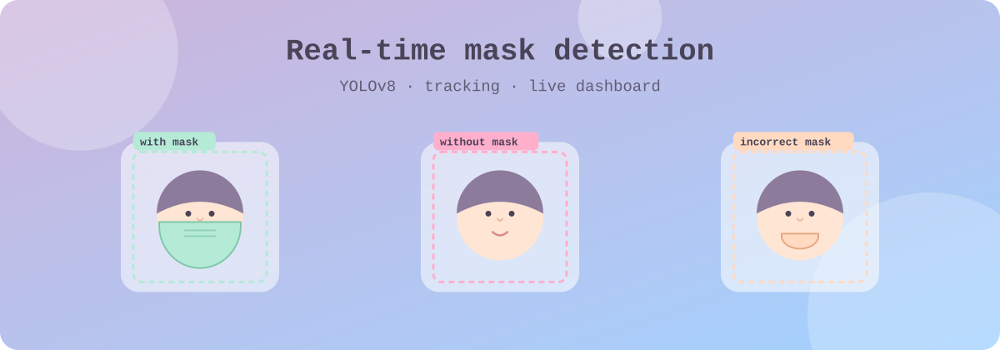
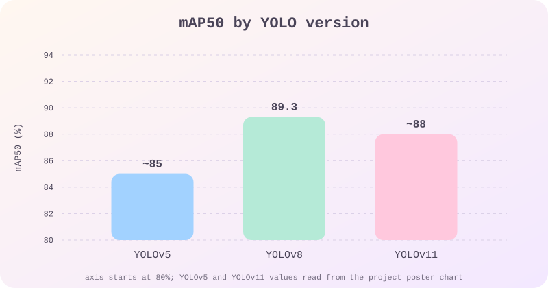
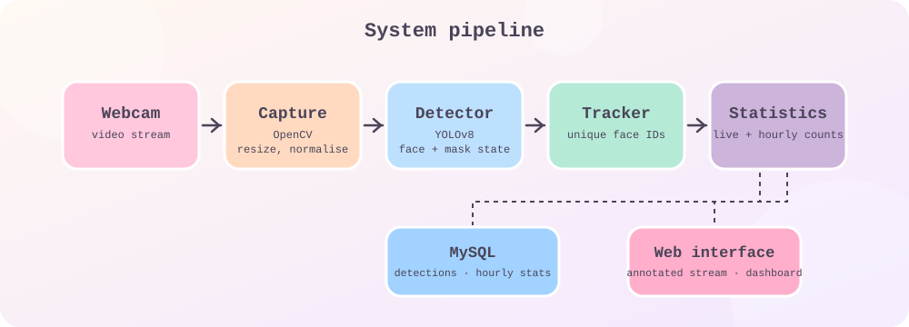
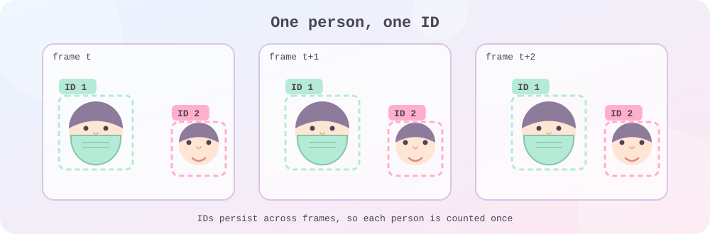
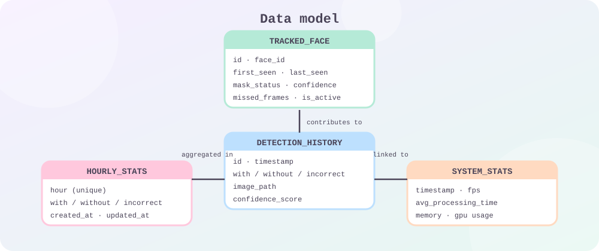
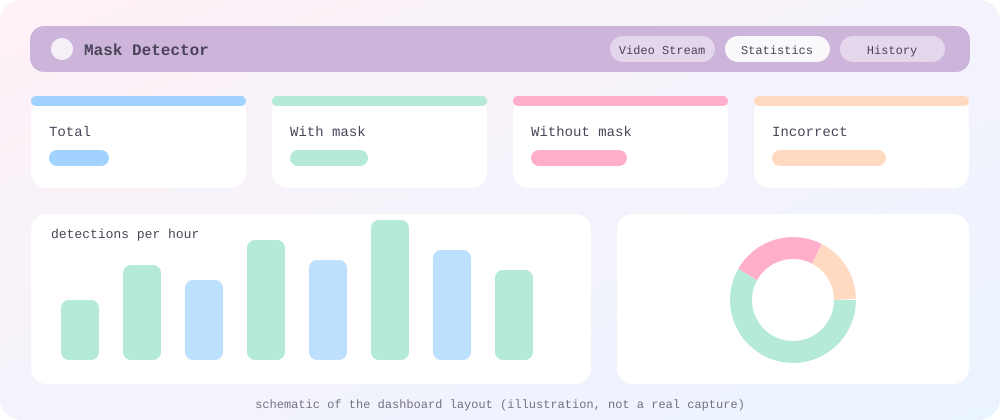

Building a real-time face-mask detection system with YOLOv8
Checking mask compliance by hand does not scale, so I built a system that does it from a live video stream: detection, tracking, counting, storage and a dashboard. This post covers the design choices, how the pieces fit together, and what the project does and does not show.

This was my year project (PFA) at Polytech Monastir in 2024/2025, supervised by Dr. Mohamed Amine Omrani and defended on 1 June 2025. I designed and implemented it on my own, from the requirements to the web interface. The code is on GitHub.
At a glance
| Context | Year project (PFA), Polytech Monastir, 2024/2025 |
| My role | Sole developer: requirements, model fine-tuning, back end, front end, deployment |
| Model | YOLOv8s fine-tuned on MaskedFace-Net, mAP50 above 89% |
| Stack | Python, OpenCV, Flask, Socket.IO, Angular, MySQL, Docker Compose, Nginx |
| Status | Live detection, tracking and statistics work; the history page was still being debugged |
| Code | github.com/LaataouiSenda/mask-detector-yolo (MIT) |
The problem
During COVID-19, masks were a cheap and effective protection, but checking that people wore them properly was not. Manual checking needs staff on site, varies from one person to the next, and reacts too slowly to be preventive. I wanted to see how far a single computer with a webcam could go: a system that watches a video stream, decides for every face whether the mask is worn correctly, and keeps clean statistics without counting the same person twice.
What the system does
- Detects faces in a continuous video stream and classifies each one as with mask, without mask or incorrect mask.
- Gives each face a persistent ID so a person who stays in view is counted once, not once per frame.
- Draws bounding boxes and labels on the stream and shows live counters in a dashboard.
- Stores detections and hourly aggregates, with a history view meant to filter them by date and time (still being debugged, see below).
Why YOLOv8
Object detectors fall into two families. Two-stage detectors such as Faster R-CNN first propose regions and then classify them. They are accurate but slow and heavy, which fits poorly with a live stream on a single machine. One-stage detectors such as YOLO predict boxes and classes in a single pass, which is what a real-time system needs.
Within the YOLO family I chose YOLOv8 for practical reasons: an anchor-free head, several model sizes (nano, small, medium) so the accuracy/speed trade-off can follow the available hardware, export to ONNX and TensorRT, and a mature, well-documented ecosystem through Ultralytics. For a project I had to build, test and maintain alone, a stable toolchain mattered as much as a point of mAP.
Training the model
I did not train a detector from scratch. I fine-tuned YOLOv8s, starting from weights pre-trained on COCO (transfer learning), on the MaskedFace-Net dataset from Kaggle. The images were organised into train, validation and test folders with a YAML configuration, and training ran on a Google Colab GPU on about 30,000 images for 100 epochs with a batch size of 16. The best checkpoint (best.pt) is the one the application loads, and the metrics and logs were saved with it.
Results
The fine-tuned model reaches an mAP50 above 89% on MaskedFace-Net. On my project poster I compared it with other YOLO versions on the same metric: YOLOv8 gives 89.3%, ahead of YOLOv11 at about 88% and YOLOv5 at about 85%.

mAP50 is a single summary number. It does not show how the model does on each class or in harder conditions, which is why the limitations below matter.
Architecture
The pipeline is a chain of small modules, each with one job.

The back end is Python with Flask for the REST API and Flask-SocketIO for the live channel. The front end is Angular with three components: a video feed (the annotated MJPEG stream), a dashboard (live counters and charts) and a history view (filtering and download). Live updates travel over WebSocket; history and configuration go through plain REST calls. Everything is containerised with Docker Compose, with Nginx routing /api, /ws and /video_feed.
Keeping capture, inference, tracking, statistics and display apart means each can be replaced without touching the rest, for example swapping the detector or the tracker, or adding a second camera later.
Three things that took the most care
1. Not counting the same person thirty times a second
A detector works frame by frame, so a person standing still would be counted on every frame. A lightweight tracker gives each face an ID and keeps it across frames, with a counter of missed frames to decide when a face has really left. This is what turns raw detections into counts that mean something.

2. Keeping latency down
Capture and processing run in separate threads, inference uses GPU acceleration, and buffers are released regularly so memory does not creep up during long sessions. Live data is pushed over Socket.IO instead of being polled.
3. Aggregating at write time
Each processed frame is stored, and a separate table keeps hourly aggregates. Dashboard and history queries then read a few rows per hour instead of scanning every detection.

Code structure
The repository keeps the back end and front end separate, so each can be started and changed on its own.
mask-detector-yolo/
├── backend/
│ ├── app.py # Flask server (REST + Socket.IO + video stream)
│ ├── mask_detector.py # YOLOv8 detection logic
│ ├── requirements.txt
│ └── data/models/ # model weights
├── frontend/ # Angular app: video feed, dashboard, history
└── README.mdThree channels connect the two sides: Socket.IO for live counters, an MJPEG stream for the annotated video, and a REST API for paginated history, filtering, export and configuration.
The interface
The web interface has three views: the live stream with annotated boxes, a statistics page with counters for total, with mask, without mask and incorrect mask, and a history page for past detections. The first two worked when I presented the project; the history page was still being debugged.

Design targets
These are the requirements I set for the system.
| Area | Target |
|---|---|
| Performance | At least 15 FPS, under 100 ms per frame, up to 50 faces at once |
| Reliability | 24/7 operation, hourly backups, automatic restart after a crash |
| Privacy and security | 100% local processing (no cloud), access control on the dashboards |
| Usability | Responsive web interface, loads in under 2 s, usable on mobile and tablet |
What this project does and does not show
- The system is the contribution, not a new model. I fine-tuned an existing YOLOv8 model and focused on the engineering around it: pipeline, tracking, storage and interface.
- The history view is unfinished. Detections are stored, but the page that lets you browse and filter them was not fully operational when I presented the project.
- Results are limited to mAP50. The design targets above are what I specified, not measured performance, and I do not give per-class precision and recall or measured FPS in this post.
- Hard cases remain open. Side views, occlusion, low light and small faces, and in particular the incorrect-mask class, which is usually the hardest to separate from the other two.
- Scope. One video source at a time, up to 50 faces, local deployment only.
What I would do next
- Debug and finish the detection history module.
- Evaluate on a held-out set with per-class precision and recall, including the difficult cases above.
- Reduce model size with quantisation and explore continual learning to adapt to new environments.
- Support several cameras, add thermal detection and generate reports automatically.
- Move to the cloud behind a third-party API so the system can be offered as a service.
- Study where and why the model fails, which is where interpretability methods become useful.
Where this leads for me
Building this system taught me how much of a working vision application is not the model: tracking, data flow, latency and honest reporting of results. It also left me with a question I could not answer with a single mAP number: when the model confuses a badly worn mask with a correct one, what is it actually looking at? That is the kind of question explainable AI is for, and it is the direction I want to take in my research, in particular for medical imaging, where a wrong decision has a real cost and the reason behind a prediction matters as much as the prediction.
Run it yourself
You need Python 3.8+, Node.js with the Angular CLI, MySQL 8.0+, a webcam, and ideally an NVIDIA GPU with CUDA for real-time speed.
# backend (http://localhost:5000)
python -m venv venv && source venv/bin/activate
cd backend && pip install -r requirements.txt
python app.py
# frontend (http://localhost:4200), in a second terminal
cd frontend && npm install
ng serveCreate a MySQL database first; the database connection and model settings are read from environment variables. The full instructions are in the repository README, under an MIT license. Questions and suggestions are welcome on LinkedIn.
Acknowledgments and references
The model is built on Ultralytics YOLOv8, the dataset is MaskedFace-Net, and the video processing uses OpenCV.
- Jocher, G., Chaurasia, A., Qiu, J. Ultralytics YOLOv8, 2023. docs.ultralytics.com
- Cabani, A., Hammoudi, K., Benhabiles, H., Melkemi, M. MaskedFace-Net: a dataset of correctly/incorrectly masked face images in the context of COVID-19. Smart Health, 2021.